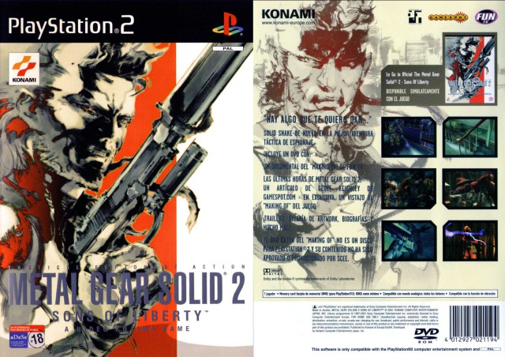

Información general
Metal Gear Solid 2: Sons of Liberty es un videojuego de acción y sigilo desarrollado por Konami y lanzado en el año 2001. El juego es la secuela directa de Metal Gear Solid, y sigue al protagonista Solid Snake en su misión de infiltrarse en un barco lleno de terroristas para detener un complot de armas biológicas. Sin embargo, a medida que el juego avanza, el jugador se da cuenta de que hay mucho más en juego que solo la misión de Snake, y la trama se convierte en una exploración de temas como la identidad, la manipulación de los medios de comunicación y el papel de los soldados en un mundo cada vez más complejo. El juego también presenta un nuevo protagonista, Raiden, quien trabaja con Snake para cumplir su misión. Metal Gear Solid 2: Sons of Liberty es conocido por su narrativa compleja y su juego de sigilo innovador, y es considerado uno de los mejores videojuegos de la era de PlayStation 2.
